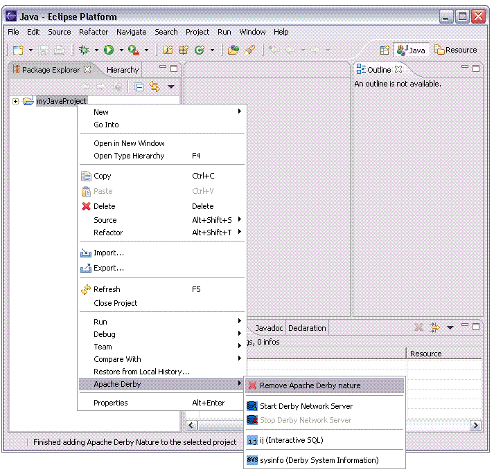

Removing the Derby nature from a Java project
The Derby nature can be removed from a Java project from within the Java
perspective. To remove the Derby nature:
-
From the Java perspective, select the project in the Package Explorer view. Right-click the project to bring up the context menu and select
the menu item, Apache Derby, Remove Apache Derby nature.

Removing the Derby nature from your Java project does the following:
-
Removes the derby.jar, derbynet.jar, derbytools.jar, derbyclient.jar jar files from the Java Build Path of the project.
-
Removes the menu options for ij, sysinfo and starting and stopping
the Derby Network Server.
-
Removes the Apache Derby item from the project's properties.